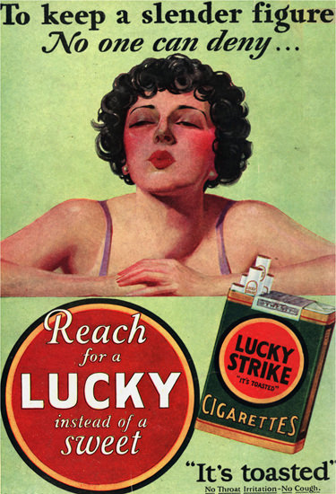
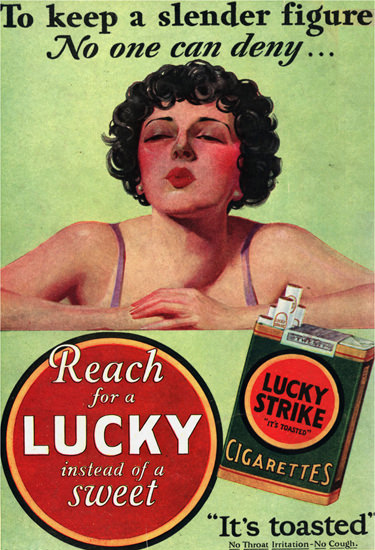

History of Influencers
How we got to the modern day social media influencer
About Project
This research project was part of a broader research initiative about social media influencers. Influencer marketing has become an integral part of advertising in recent years. It is now a multi billion dollar a year industry. This is especially true on social media with Instagram being the biggest influencer platform. I sought out to trace how we got to this point by going back to history. The goal was to see how overtime influancal people impacted the world, and how they have monatized their influence onver time. From spokespeople, to celeberty endorsments to the modern day instagram influencer.
Reaserch Method
ed facilisis laoreet porttitor. Vestibulum tristique faucibus nisl a dapibus. Nullam egestas nisi pellentesque finibus sagittis. Mauris sagittis odio non mauris sagittis, vulputate posuere nisi dictum. Cras rutrum consequat mauris tincidunt tincidunt. Nam iaculis, magna sed dapibus tristique, nulla est semper augue, at suscipit arcu orci sit amet nisi. Morbi quis vestibulum mi. Suspendisse mattis lobortis congue. Sed faucibus ullamcorper libero, nec feugiat dolor euismod id. Phasellus a dictum diam. Sed pellentesque sed orci at venenatis. Fusce ante tortor, ullamcorper non neque vel, tempus egestas turpis.
Time Periods and people Studied
Phasellus aliquam turpis mauris, imperdiet porttitor justo elementum sit amet. In quis enim vitae nibh elementum facilisis.
Fusce mi mi, porttitor ac eleifend non, semper quis turpis. Sed fringilla vitae justo sit amet tristique. Fusce a tempus risus.
Donec consequat quam ex, congue vulputate magna efficitur quis. Suspendisse quam tortor, molestie id ante a, viverra malesuada lacus.
Sed ac dolor a nunc suscipit sollicitudin. Maecenas varius imperdiet enim, porta vehicula neque vulputate eu. Maecenas at purus urna.
Vivamus dignissim nisi justo. Etiam sollicitudin fermentum consectetur. Nullam et sem tempor nibh gravida venenatis ut eu mi.
Aliquam sit amet diam a velit accumsan rutrum ac sit amet lorem. Curabitur condimentum ante a tellus ultrices ultricies.
 

Future Work
Curabitur vel lacus ut dui lobortis porta. Nulla facilisi. Fusce pellentesque lorem vel sapien ullamcorper fringilla. Pellentesque tortor lorem, rutrum eget eros convallis, tincidunt tempor ipsum. Praesent ac tortor non arcu imperdiet pretium. Nunc pulvinar, eros et posuere dignissim, augue lacus pulvinar magna, ut maximus eros tortor vel quam. Proin iaculis urna id ipsum dapibus vehicula. Pellentesque maximus iaculis felis id pulvinar. Cras dapibus purus nec massa bibendum vestibulum. Quisque risus tellus, iaculis vel scelerisque vitae, dictum vel risus. Quisque luctus ligula nisi, vitae luctus elit convallis a. Suspendisse iaculis diam vel feugiat lacinia. Nam tincidunt orci in finibus finibus. Etiam id nulla rutrum ipsum viverra volutpat eu a mi. Sed ullamcorper id purus nec fringilla.